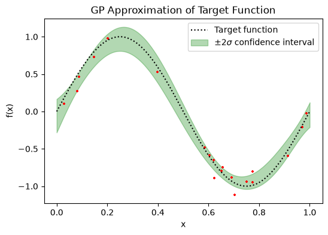

Gaussian process regression#
This page walks through the core surrogate-modeling workflow in elyza:
describing an input, wrapping a model as an Evaluator,
generating training data, and fitting a surrogate. It ends with a short
comparison of the three surrogate models the library ships with.
Every example below runs as-is against a clean checkout.
1. Vanilla Gaussian Process Regression#
Every surrogate modeling workflow typically starts with an Input.
For a single scalar variable, use ScalarInput and give
it a sampling_func that turns a JAX PRNG key into one random draw of the input. This isn’t required, you can call surrogate models using Xtrain and Ytrain jax arrays exactly like scikit-learn does, but for active learning schemes or routines in which we must call an underlying function on new data, it helps to fit everything into the input/evaluator schema.
import jax.numpy as jnp
import jax.random as jrand
from elyza.core.data import ScalarInput
# instantiate the input variable
x = ScalarInput(
name="x",
dim=1,
sampling_func=lambda key: jrand.uniform(key, minval=0.0, maxval=1.0),
minval=0.0,
maxval=1.0,
)
# generate input training data
key = jrand.PRNGKey(0)
X_train = x.sample(key, 20) # shape (20, 1)
from elyza.core.evaluator import Evaluator
import jax.random as jrand
# instantiate the output function
evaluator = Evaluator(
name="sinusoid",
inputs=[x],
output_dim=1,
evaluation_func=lambda x: jnp.sin(2 * jnp.pi * x),
)
# generate the output training data
Y_train = evaluator.evaluate(X_train) + 1e-1 * jrand.normal(jrand.PRNGKey(42), shape = X_train.shape) # shape (20, 1)
GaussianProcess is the class for the vanilla dense kernel matrix Gaussian process regression as described in Rasmussen & Williams et al. 2008. It takes a kernel and a mean function, and fits their hyperparameters by maximizing the log-marginal-likelihood with an
optim optimizer.
from elyza.surrogate.gp import GaussianProcess, ARD, Constant
from elyza.optim import ADAM, ADAMOptions
gp = GaussianProcess(input_dim=1, kernel_cls=ARD, mean_cls=Constant, noise_var = 1e-2)
gp.set_optimizer(ADAM, ADAMOptions(lr=1e-1, epochs=500))
gp.fit(X_train, Y_train)
Every surrogate in elyza shares the same fit / predict /
sample interface (see Surrogate).
predict returns a mean and, for a GP, either the marginal variance or the
full posterior covariance:
X_test = jnp.linspace(0.0, 1.0, 1000).reshape(-1, 1)
Y_test = evaluator.evaluate(X_test)
mu, var = gp.predict(X_test) # analytical posterior mean and variance
conf = 2 * jnp.sqrt(var) # plus/minus two standard deviation confidence interval
samples = gp.sample(jrand.PRNGKey(1), X_test, n_samples=3) # sampling from the GP posterior
from matplotlib.pyplot import *
%matplotlib inline
figure(figsize=(6,4), dpi=100)
plot(X_test.ravel(), Y_test.ravel(), color = "black", linestyle = 'dotted', label = "Target function")
fill_between(X_test.ravel(), mu - conf, mu + conf, alpha = 0.3, color = 'green', label = "$\\pm 2 \\sigma$ confidence interval")
scatter(X_train.ravel(), Y_train.ravel(), s = 10.0, color = 'red', marker = '+')
legend()
xlabel("x")
ylabel("f(x)")
title("GP Approximation of Target Function")
show()

New data can be folded in afterward without refitting from scratch, via a
rank-m Cholesky update:
X_new = x.sample(jrand.PRNGKey(2), 5)
Y_new = evaluator.evaluate(X_new)
gp.update(X_new, Y_new)